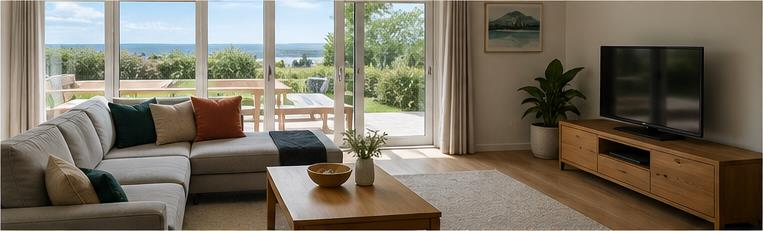
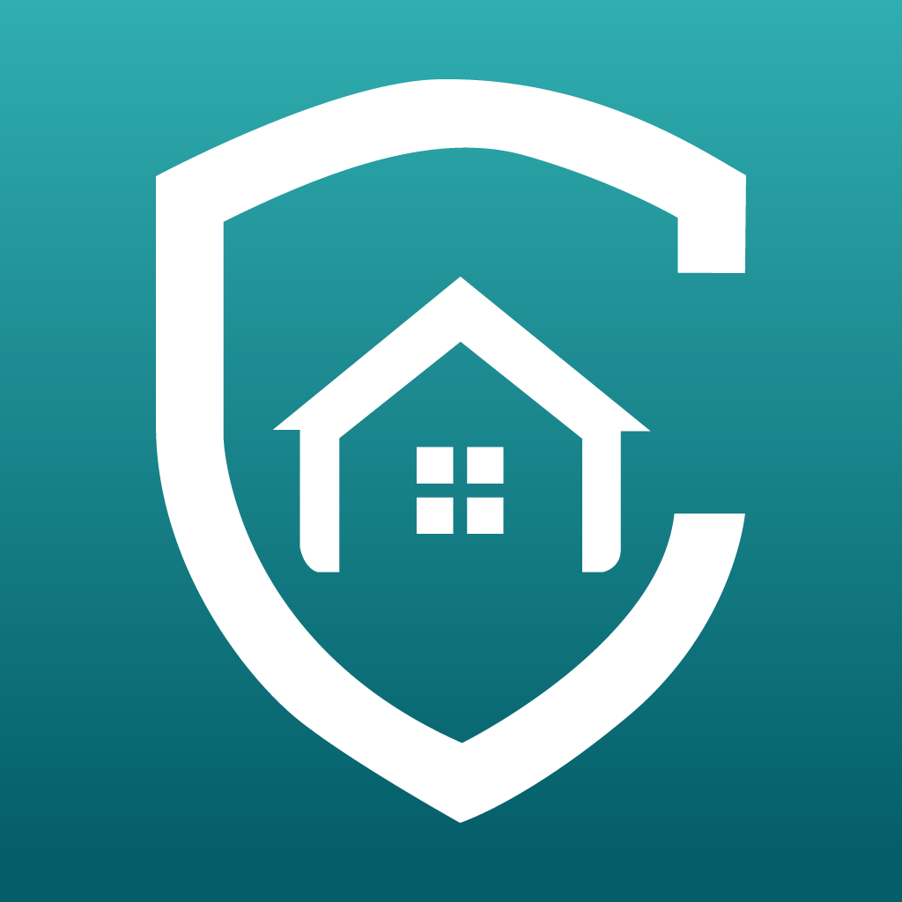
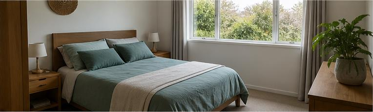
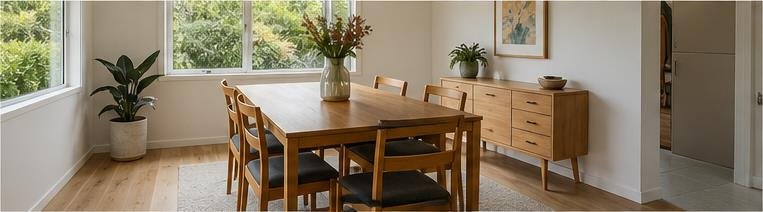
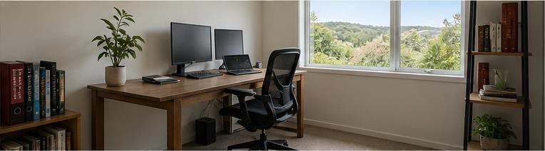

Selected direction · Refined
Evidence Stack
Coverly calmly works down through a physical pile of submitted evidence. Analysed cards leave once, revealing the next image already waiting underneath.
- Causal card reveal
- Honest single-image mode
- Quiet rear replenishment
Preview scenarioKeys: 1 · 5 · 0

CoverlyKnow what you ownAnalysing your scan
Looking for individual items…



Checking image 1 of 5
Building your inventory